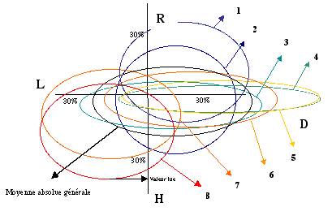

La profusion d'information que produit cette analyse nous oblige à les présenter de manière synthétique et visuelle. Avec 4 axes placés en étoile, nous définissons un espace des phases dans lequel les systèmes sont représentés par un ovale. Sur un espace à deux dimensions on représente les mêmes variables des systèmes. Sur un graphique à trois dimensions, on représente un systèmes avec les composantes de ses différents niveaux. On peut également représenter les systèmes par une série de chiffres (expl.:20-30-40-10), comme nous le proposons pour la labellisation.
On peut également représenter les systèmes comme des cellules (cellules systémiques), dont les dimentions et les positions représentent les variables complexes. Cette représentation permet également une visualisation globale (ensemble des niveaux et des systèmes en interaction) des systèmes.
Nous avons présenté, jusqu'ici, les quatres indicateurs comme étant les quatre côtés d'un carré. De cette manière, nous avons pû placer sur l'axe horizontal les interactions égalitaires, celles dont la somme des flux est nulle, et sur l'axe vertical les interactions asymétriques, celles dont la somme des flux est soit positive soit négative pour les deux systèmes. Nous avons pu également faire correspondre des notions politiques comme "la droit", vision de l'organisation sociale centrés sur l'économie (à droite de la représentation) et "la gauche", vision de l'organisation sociale centrée le social (lien social, partage, à gauche de la représentation).
Nous pouvons présentés les résultats quantifiés de nos analyses selon la même structure. Puisqu'il n'existe pas de valeur négatives à nos variables, nous pouvons les représenter sur quatre axes ayant un centre commun. Sur chaque axe nous pouvons représenter la valeur d'un indicateur. Ces axes délimitent un espace, l'espace des phases, dans lequel les systèmes sont définits. Pour avoir une représentation visuelle plus directement assimilables, nous placons dans cet espace un ovoïde. Ainsi, la grandeur de l'ovoïde est proportionelle à l'importance générale des flux est donc des capitaux actuels des systèmes. Le décentrage de l'ovoïde que l'on peut représenter par une flèche rejoignant le centre de l'espace des phases et le centre de l'ovoïde définit visuellement la complexité du système. Plus cette flèche est longue, plus le système est décentré, moins le système est complexe. L'orientation de la flèche indiquera le type de stratégie du système.

Il est ainsi possible de comparer visuellement des systèmes, de visualiser leur complexité individuelle, mais aussi globale (moyenne des systèmes représentés), et de comparer leur type de stratégie. Il est possible de représenter les systèmes en valeur absolue, de manière à comparer l'importance des flux. Lorsque l'on veut faire ressortir la stratégie ou la complexité, nous représentons les systèmes en valeur absolue. Pour cela nous, nous représentons les flux en pourcentage des flux totaux. La somme des flux est ainsi égale à 100. En comparant des systèmes en premier niveau d'intégration et après une intégration en cascade, on peut visualiser l'impact que le système opère sur l'environnement.
Lorsque l'on travail à l'étude de filières, on peut représenter leur profil de décentrage. Il s'agit de placer dans l'espace des phases les centres de tous les systèmes impliqués dans la chaîne que forme la filière. Ces points sont reliés entre eux en commençant par un bout de la filière et en finissant par l'autre bout. On peut ainsi visualiser des logiques relationelles et évolutives.
Les figures présentées ci-dessus sont des extrait de l'étude de la filière des fruits séchés à travers le commerce équitable (L'étude complète est disponible).
Pour compléter les représentations que nous voulons nous faire de la complexité, des relations entre les systèmes, de leurs capitaux et de leurs stratégies évolutives, nous pouvons symboliser les systèmes comme des cellules formées de membranes échangeant des produits avec leur environnement. La similitude avec un organisme vivant, système complexe bien connu, permet une représentation moins conceptuelle, plus pratique, donc plus facilement compréhensible.
Le système est représenté comme un récipient dans lequel les parois, qui délimitent le système de son environnement, sont constituées de quatre types de membranes. Les membranes sont incrustées de quatre différentes petites pompes qui permettent quatre types de flux différents.
- Certaines membranes échangent (D) des produits avec l'environnement. Elles font entrer des produits dans le système en échange instantané avec d'autres produits qui en sortent.
- Certaines membranes échangent, mais avec une réciprocité différée (L). Elles donnent des éléments et plus tard elles en reçoivent. Ces deux premier types d'échanges se réalisent de part et d'autre de parois verticales qui séparent deux liquides au même niveau (même valeur des échanges) quand bien même les niveaux des récipients sont différents.
- Certaines membranes prennent des ressources (sociales, biologiques ou physiques) à leur environnement sans contrepartie (H). Pour cela, la membrane doit être horizontale et prendre les ressources dans un environnement qui a un niveau inférieur au système.
- Certaines membranes donnent des produits (produits ou déchets) à leur environnement. Pour cela, la membrane doit se situer en dessus du niveau du système qui reçoit. La figure 78 représente les flux à travers les membranes.

Les flux horizontaux dans l'espace des phases (D et L) sont représentés sur une paroi verticale entre des fluides qui se situent au même niveau hiérarchique, bien que leurs systèmes respectifs, donc la pression de part et d'autre de la paroi soit différente. Les liquides étant quasiment incompressibles, les flux dans les deux sens sont équivalents en volume.
Les flux verticaux sont constitués d'une pompe (H) qui aspire à contre pression et d'un trop plein ou d'une pompe qui naturellement redonne ses ressources ou ses déchets.
Dans la représentation suivante, la structure du récipient, ses membranes ainsi que le liquide qu'il contient représente des variables d'état. Les flux, variables de mouvement, sont les transferts à travers les membranes ou ce que le système reçoit par le haut (symbolisé R+). La structure a pour objectif de séparer les systèmes. Sans les éléments incrustés dans les membranes qui permettent les flux, la structure est inerte. Elle est d'ailleurs légèrement poreuse, ce qui fait qu'en l'absence de flux les niveaux vont s'équilibrer lentement. C'est la dégradation entropique. Pour que des incrustations apparaissent, il doit y exister une structure. Le système construit cette structure horizontale et verticale de manière à permettre aux modules actifs d'apparaître et de travailler. Leur apparition est liée à l'espace structurelle disponible et à l'environnement. Pour cela, le système ajuste sa structure à ses objectifs en fonction de l'affectation interne des ressources. Il en résulte des flux extérieurs en fonction de l'environnement et un remplissage plus ou moins important du récipient qui symbolise le capital du système. D'autres relations existent entre flux, structure et capital. Nous en parlerons par la suite.
Globalement, nous pouvons représenter les systèmes physiques, biologiques et sociaux, imbriqués les uns dans les autres de la manière suivante.
Le réservoir le plus grand contient de l'énergie matière concentrée. L'énergie matière qu'il contient se dégrade de la même manière que le liquide suinte à travers la porosité du réservoir. De multiples autre réservoirs composent ce réservoir physique (étoiles, trou noirs, galaxies,…). C'est sur celui du système solaire que la dynamique de la vie a pris naissance. Au lieu de laisser cette énergie matière se diluer, elle l'immobilise dans le réservoir de la vie, puis dans celui du social. Cela constitue le capital issu de l'évolution complexe.
Les systèmes évolués prennent des éléments lourds (foncés) dans l'environnement au moyen des flux hiérarchiques. Ils les transforment au moyen des flux D et L ce qui les complexifie et les rend plus léger dans notre model de représentation. Les déchets (lourds) sont rejetés dans l'environnement de manière à laisser dans le système des produits complexes et légers. Le système est donc plus léger, plus complexe, et monte au dessus du niveau de l'environnement. Ainsi, le système domine son environnement, même si il en dépend totalement.
La représentation générale des systèmes nous a montré l'emboîtement des systèmes entre des niveaux systémiques. A l'intérieur de chacun de ces niveaux, des systèmes sont imbriqués les uns dans les autres.
Le système de référence, celui qui fait l'objet de l'étude, est en relation avec de nombreux autres systèmes hiérarchiquement supérieurs ou inférieurs. Plusieurs systèmes partenaires peuvent être représentés en même temps. Un même système peut être représenté deux fois, lorsqu'il entretien à la fois des relations hiérarchiques supérieurs et inférieurs. La figure ci-dessus nous montre les flux qui entrent (+) et ceux qui sortent (-) d'un système lorsque les partenaires sont hiérarchiquement supérieur ou inférieur. La figure suivante nous montre les types de partenariats des systèmes.
La structure est produite par l'affectation des ressources. Les ressources de type Xneg., celles qui externalisent les charges dans l'environnement, affectent les caractéristiques des systèmes partenaires, alors que les ressources affectées directement à la complexification des systèmes, modifie la structure et la position des systèmes.
Les flux internes ne déterminent pas directement les variables définies sur le model de représentation (dimensions et positions), mais leurs modifications, car la structure et la position sont une accumulation historique. Ainsi, R modifie la largeur de la structure et D la hauteur. L définit la position horizontale par rapport aux autres systèmes et H la position verticale. La différence entre les niveaux détermine la hiérarchie. La différence verticale, c'est-à-dire le chevauchement horizontal, correspond à la liaison, mais plus généralement à la dépendance puisque la surface de recouvrement mutuel est proportionnelle aux flux échangés, donc à l'importance de l'interaction. La liaison renforce la dépendance crée par les autres flux. On la représentera par des couleurs plus ou moins foncées en fonction de la liaison.
Les flux de type R (investissements dans le système) correspondent à l'élargissement du contenant afin de l'ouvrir plus sur l'extérieur (recherche de partenaires clients, fournisseurs, main d'œuvre,…) ou d'y acquérir des machines ou des infrastructures. Les machines sont des protosystèmes qui possèdent toutes les caractéristiques des systèmes autonomes sauf celui de la reproductivité.
Les flux de type Rneg. (Consommation de biens destinés à la production pour l'environnement) sont les ressources destinées à transmettre son identité aux autres systèmes à travers des biens ou des services donnés ou vendus. Le résultat est une intégration plus importante des systèmes partenaires donc un déplacement vers le système de référence.
Les flux de type D (recherche et développement) ont pour objectif la spécialisation du système. Elle correspond à une augmentation en hauteur du récipient, augmentant ainsi la hiérarchie du système qui se définit par la différence de niveaux entre les partenaires. Lorsque la concurrence est forte sur un marché, la différence de niveau entre client et vendeur est faible, de sorte que le vendeur a peu de pouvoir sur son client. Lorsque la spécificité est élevée, la concurrence est faible et le pouvoir du producteur est élevé.
Les flux de type Dneg. (Marketing, commerce, transport,…) correspondent à la diffusion des biens et services dans les systèmes partenaires. Pour les systèmes partenaires dominés, cela correspond à un déplacement vers le haut, donc à une interaction potentielle horizontale plus importante (structure commune plus importante). Pour le système dominant, cela correspond à un déplacement vers le bas. Notons ici que ces déplacements diminuent la hiérarchie alors qu'ils augmentent le potentiel de diffusion. Puisque D et Dneg sont associés, la résultante sera variable selon la composante des deux flux.
Les flux de type H (organisation, planification,…) correspondent à une modification de la position verticale du système. Les flux H élèvent le système de référence donc augmente H+ des systèmes de basse hiérarchie et diminue les flux H- de haute hiérarchie.
Les flux de type Hneg déplacent verticalement les systèmes partenaires vers le bas de manière à diminuer la hiérarchie des systèmes dominant et à augmenter la hiérarchie des systèmes dominés.
Les flux de type L déplacent horizontalement le système de référence, de manière à s'intégrer dans les systèmes qui lui paraissent favorables.
Les flux de type Lneg déplacent les systèmes partenaires horizontalement en direction opposée du système de référence afin de diminuer l'interaction entre les systèmes, donc leur dépendance.
Le capital correspond, dans cette représentation, au volume total du système et de ses partenaires. Un ensemble de système complexe aura un volume supérieur à un système statique, non complexe. La structure, l'état des membranes, l'importance des flux ne sont qu'une composante qui permet de déterminer le capital. Le remplissage du contenant dépend notamment de l'histoire du système.
Pour se reproduire, un système produit, au moyen de ses flux R-, un système inclus. Ce jeune système n'est d'abord que le réceptacle des flux R- de son environnement composé exclusivement du système mère. Il développe ensuite des flux horizontaux D et L avec son environnement mère, mais aussi avec un environnement extérieur, ce qui lui permet de se différencier de son environnement mère. Des flux hiérarchique H+ sont pris dans l'environnement extérieur. Enfin lorsque son identité est constituée, il peut la transmettre au moyen des flux R- et ainsi se substituer à son environnement mère qui va disparaître. La machine possède ce même type de dynamique de naissances, mais sans jamais pouvoir produire de flux R- et ainsi initier un fonctionnement autonome. La machine, en symbiose avec son environnement est un élément vital. Avec son système mère, elle compose un système autonome.
Les figurent suivantes sont extraites de l'analyse d'une filière (Commerce équitables des mangues séchées). Elle représentent les systèmes de la filière et les interactions qu'ils entretiennent entre eux. Nous n'avons pas représentés, comme dans les autres figures les interactions avec l'environnement extérieur à la filière. De cette manière, il est possible de déterminer la dynamique propre à la filière et d'estimer ses caractéristiques systémiques et complexes. Cela nous permet de déterminer si il existe une stratégie de filière ou si celle-ci n'est que la juxtaposition de différents systèmes qui n'ont aucune identité commune.
Sur la figure suivante, nous avons représenté la filière de séchage en commençant par les vergers et en finissant par les consommateurs. Observons tout d'abord le niveau physique, le niveau biologique et le niveau social intégrés les uns dans les autres. Le niveau de chacun de ces réservoirs est représenté par un trait pointillé. Les individus tirent directement leurs ressources du niveau biologique, puisque c'est au moyen de leurs corps vivants qu'ils ont une activité sociale, ainsi que de leur environnement physique qu'il ont façonné, puisque ils évoluent dans un espace physique (à la différence du virtuel) peuplé d'objets et d'outils matériels (vêtements, lunettes, voitures,…) qui font partie intégrante de l'être social représenté (ouvrier ou consommateur). Remarquons qu'une partie de la filière est en dessous du niveau de l'environnement moyen social mondial et d'autres en dessus. Les plus foncés sont en bas et les plus clair en haut.
Nous avons symbolisé l'environnement social mondial comme étant un seul réservoir pour simplifier la représentation. En réalité, cet environnement est composé d'une multitude d'autres réservoirs qui permettent de cloisonner et de cadrer les systèmes de la filière. Ce cloisonnement permet les différences de niveau observées. Au Sud, les niveaux sont inférieurs à la moyenne et au Nord ils sont supérieurs. Les ouvriers agricoles au Burkina Faso sont en dessous du niveau biologique. Cela signifie qu'ils sont en dessous du seuil de pauvreté. Ils sont bloqués dans leur croissance sociale, mais aussi limitée dans leur développement biologique. Parfois ils ne mangent pas à leur faim. Souvent, ils n'assurent pas l'hygiène que leur demande leur environnement. Jamais, ils ne se soignent correctement. Il en résulte un état de fragilité et une espérance de vie bien en dessous de celle que l'on connaît au Nord.
Certains systèmes sont des systèmes uniques, les autres sont des ensembles de systèmes regroupant des acteurs identiques, bien qu'ils n'aient pas entre eux une dynamique systémique. Les zones grisées correspondent à l'importance des interactions entre les systèmes en fonction de l'ensemble des interactions, donc du volume disponible dans les récipients. Plus les zones sont foncées plus il existe un lien important entre les systèmes considérés. La partie droite des récipients correspond à ce qui sort des systèmes et la partie gauche à ce qui entre dans les systèmes. Lorsque la zone grisée, c'est-à-dire la zone d'interaction, emplit la moitié gauche en largeur du système (cas entre les vergers et les entreprises de séchages), c'est que le produit ou le service échangé entre obligatoirement dans la construction de l'identité. Si il empli qu'une partie de cette moitié c'est qu'il ne fait que participer, à côté d'autres éléments à la construction de l'identité. C'est le cas entre l'exportateur et l'importateur, pour lequel les mangues séchées ne sont qu'une partie des produits distribués. Lorsque la partie grisée ne remplit qu'une petite partie en hauteur, c'est que de nombreux autres éléments entres dans le processus de fabrication ou de production de l'identité. Ainsi, les mangues ne sont qu'une petite partie des intrants des entreprises de séchage. Il en résulte que la distance en dessous des espaces grisés, correspondent à la valeur ajoutée au produit échangé. Elle est importante dans le cas d'une entreprise de séchage mais faible dans le cas des exportateurs, importateurs ou distributeurs.
Exemple de l'interaction entre systèmes d'une filière:
Exemple des composantes complexifiantes des flux au sein des éléments d'une filière:
Il s'agit des flux internes complexifiants que les systèmes entretiennent au sein de la filière. Ces flux déterminent l'adaptation des systèmes à leur environnement, sachant que nous avons pris en compte, dans cette représentation, uniquement les partenaires de type maillon de la filière comme environnement.
Exemple des composantes entropiques des flux au sein des éléments d'une filière:
Il s'agit des flux internes de nature entropique, c'est-à-dire les flux qui constituent des charges externalisées, que les systèmes entretiennent au sein de la filière. Ces flux déterminent la dynamique qui consiste à adapter l'environnement au système, sachant que nous avons pris en compte, dans cette représentation, uniquement les partenaires de type maillon de la filière comme environnement.